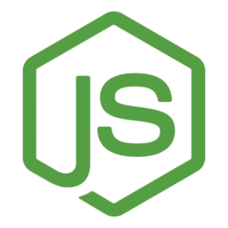

Herramientas que aprenderás
Javascript: Es el lenguaje que le da la interactrividad a las páginas web
HTML: Es el lenguaje de marcado que define la estructura de las páginas web
CSS: Es el lenguaje de estilos que define el diseño y la apariencia de las páginas web

Node Js: Es un entorno de ejecución de código abierto y multiplataforma que permite ejecutar JavaScript fuera del navegador, específicamente en el lado del servidor
"¿Cómo aprenden los programadores informáticos su arte? ¿Hay algún proceso descrito paso a paso que garantice el resultado deseado? Todos los grandes programadores aprenden del mismo modo: probando. Desarrollan un código y comprueban qué hace el ordenador. Lo cambian y lo comprueban de nuevo. Repiten el proceso una y otra vez hasta que comprenden cómo funciona; Igual que el niño con la caja de luz y sonido"
¡Hazlo! de Seth Godin